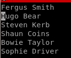
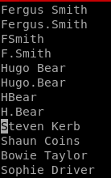

vim macro breakdown
we want to make a userlist to enumerate users with the kerbrute script ippsec utilized on this boxwe can write a python script but if we can't utilize that tool we can also use vim macros to generate a nice user list without python

keystroke macros are:
'q' to start recording, 'a' to bind macro to a

yy - yoink line Fergus Smith
3p - paste yoinked line 3 times


‘home' button, ‘/’ to start search ‘spacebar’ to find the next empty space 'enter’ to set the vim curser on the space ‘s’ (to remove space) and ‘.’
 and ‘esc' (to leave insert mode)
and ‘esc' (to leave insert mode)‘down arrow’, ‘home’ button, ‘right arrow’ to move cursor to Fergus ‘dw’ (delete word)

‘down arrow’, ‘home’ button, ‘right arrow’ to move cursor to Fergus ‘dw’ (delete word) ‘i’ (for insert mode) ‘.’, and ‘esc’ (to exit insert mode)

‘down arrow', ‘home' button', and finally ‘q’ to stop recording
now simply type ‘@a’ to repeat the macro once or
'<#>@a to repeat the macro # times ie 3@a = 3 loops of macro
our finished list looks like so